Emulator — potvrda27.10.2026.
Javni game.js, managers.js, theme-settings-room.js i tri nova CSS fajla vracajuHTTP200 i normalizovano odgovaraju lokalnom HEAD-u na pocetku prolaza. Radni direktorijum je bio cist.
Ponovna provera R01/R07–R13: izbor Desert/Moon/Severna, ponovni ulazak u Podesavanja, restart Moon, ponovni topli izbor, Moon/Easter statistika, Easter Top lista i Vatreni niz. Dodatno aktiviranje vec posedovanog Svetlog zlata iz Riznice.
Nije pregled svih soba i svih deset tema u ovom prolazu. Nije fizicki S25 test, benchmark praznog HTTP cache-a niti simulacija slabe mreze. Nije pocinjana nova partija radi game panela; njegov put ima regresione testove, ne novi Android snimak.
Nisu pokretane nove partije, nagrade, kupovine, nagradne reklame, dueli ili poruke. Automatski test interstitial pri izlasku iz Top liste zatvoren Android back dugmetom. Bez WebView debugger pristupa ili ekstrakcije sesije.
Puna evidencija · Prethodni prolaz
R01 — Delimicno potvrdjeno.
Desert/Moon/Severna uspevaju iz prvog izbora u ovom prolazu. Prvi izbori pokazuju loader; ponovni Moon prikaz brzo kompletan. Cache nije brisan; ne tvrdi se trenutna hladna promena.
R13 — Potvrdjeno u pregledanim stvarnim scenarijima.
Tri teme ostaju posle meni/Podesavanja povratka; Moon posle restarta, Light posle izbora iz Riznice. Nema ranijeg vracanja na Desert.
R08 — Potvrdjeno na Moon i Easter primerima.
Uskladjeno podnozje i navigacioni prostori. Ostale teme imaju isti CSS i regresione provere, bez novog pojedinacnog snimka u ovom prolazu.
R09 — Potvrdjeno na Moon i Easter H2H.
Tematsko mastilo umesto opste jarke zelene/crvene; staticki kontrast svih deset paleta ostaje zaseban dokaz.
R10 — Potvrdjena prethodna dorada; dodatni tab Riznice je R15.
Easter glavne tri kartice, redovi Vatrenog niza i skrol sada prate paletu.
R11 — Potvrdjeno.
Easter Top lista pokazuje brojeve4+, prve tri kanonske medalje ostaju.
R07 — Dodatno lokalno ispravljeno; nova vizuelna potvrda ceka deploy.
Kasniji theme-quarterly-league-room.css imao je font shorthand koji je nadjacavao raniju kompaktnu tipografiju. Odgovarajuce pravilo361–480px sada je u kasnijem fajlu; dimenzije i logo ostaju.
R12 — Tematska pozadina i mastilo potvrdjeni; dodatna lokalna dorada ceka deploy.
Nepotpuni PNG delovi u gate-u skrivaju se do decode. Kasno ucitani PNG ne otkriva zastareli gate. Neutralni veo uklanja stari Easter ljubicasti sloj; Green gate koristi postojece meni identitete i nema hue-rotate prebojavanja.
R14 — Lokalno ispravljeno; Android potvrda ceka deploy.
ShopManager.equip je direktno menjao temu pre pripreme PNG. Sada ceka menu i treasury kontrole, close, dukat i video. Poslednji izbor pobedjuje; neuspeh ili promenjeno vlasnistvo cuvaju prethodni kompletan izgled. Regresioni test prolazi.
R15 — Lokalno ispravljeno; Android potvrda ceka deploy.
Easter tabovi koriste postojece tematske povrsine/senke umesto starog ljubicastog. Light naslov i zaglavlje koriste tematske povrsine i ink za citljivost.
Snimci objavljene verzije, pre novih lokalnih dorada
Zelena: originalni ekran
R07 ostaje: dva reda naslova i skraceni poeni lige na oko411px.
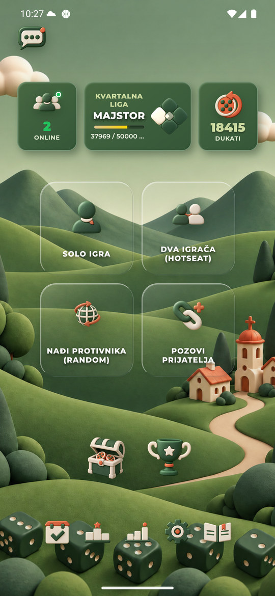
Prvi izbor Desert u ovom prolazu
Tematski gate, ali delovi nedekodiranih slicica. Nije merenje praznog HTTP cache-a.
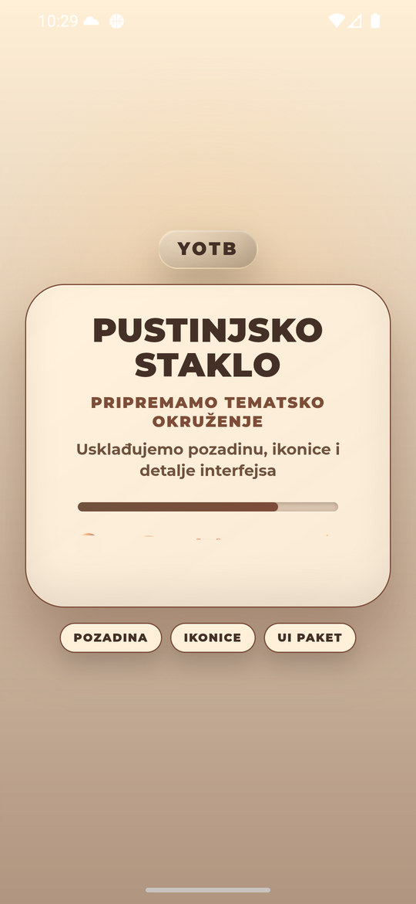
Desert: kompletna Podesavanja
Izbor uspeva bez ponavljanja.
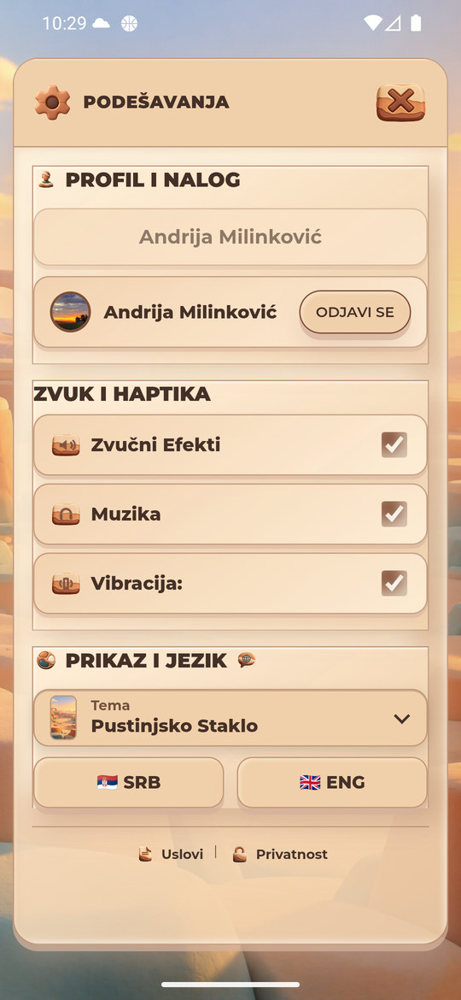
Desert: ponovni ulazak
Tema se nije vratila na prethodnu.
Prvi izbor Moon u ovom prolazu
Pozadina, naslov i paleta pripadaju Moon. Slicice jos nepotpune.
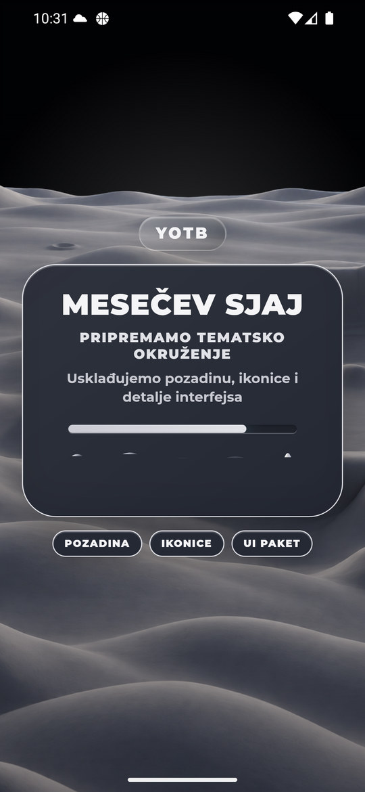
Moon: kompletna Podesavanja
Izbor uspeva bez ponavljanja.
Moon: ponovni ulazak
Tema ostaje izabrana.
Prvi izbor Severna u ovom prolazu
Odgovarajuca pozadina i mastilo.
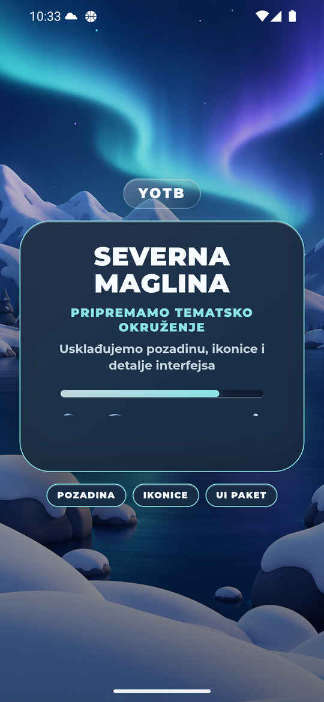
Severna: kompletna Podesavanja
Izbor uspeva bez ponavljanja.
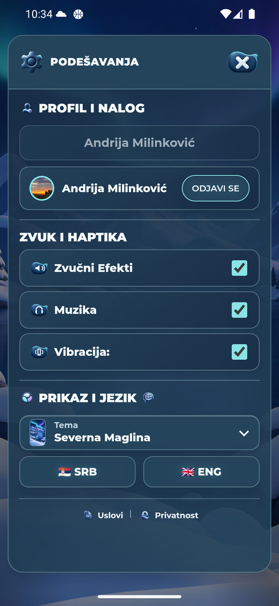
Severna: ponovni ulazak
Nema ranijeg povratka na Desert.
Ponovni izbor Moon
Na prvom snimku nakon kratkog cekanja nova tema je kompletna; naziv fajla oznacava podeseni wait250ms, ne ukupno trajanje promene.
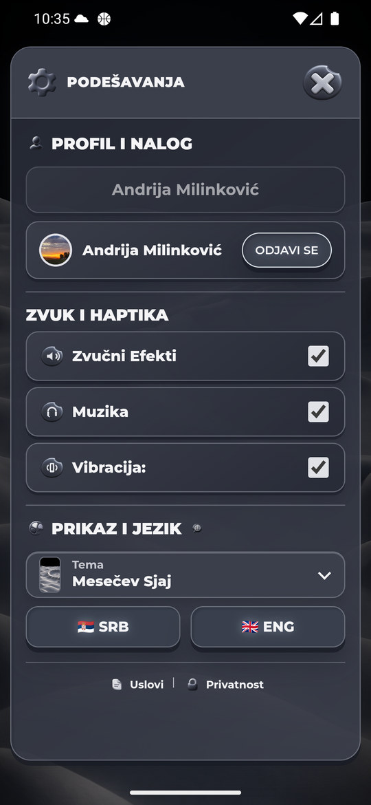
Moon: ponovno pokretanje aplikacije
Prijava i tema su ocuvane.
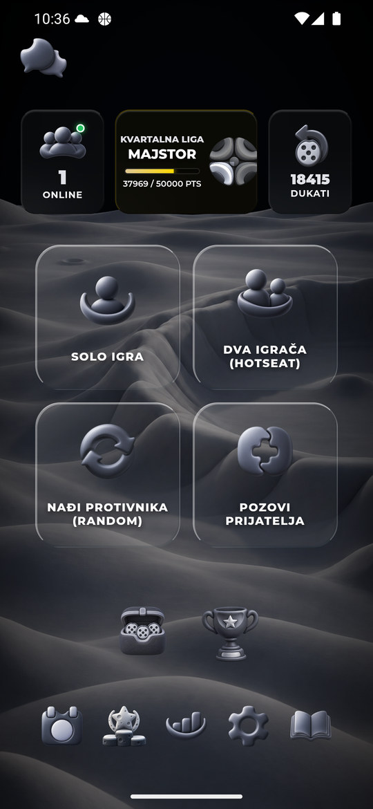
Moon: pregled statistike
R08: vece podnozje sa44px dodirima i uskladjeni razmaci.
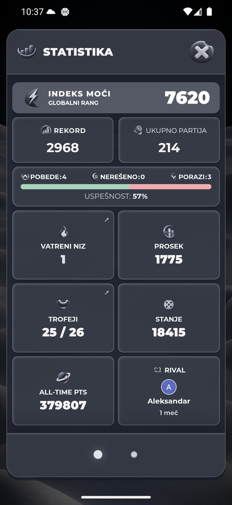
Moon: H2H
R09: tematsko citljivo statusno mastilo.
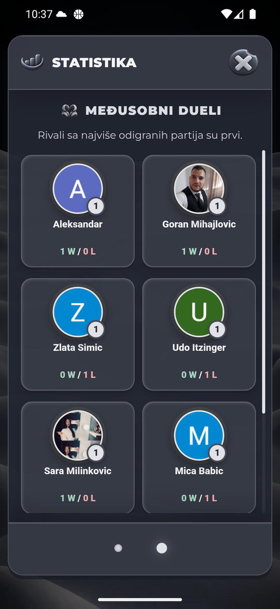
Easter: ucitavanje
Mastilo i panel su tematski; preostali stari ljubicasti veo i delovi nedekodiranih slika.
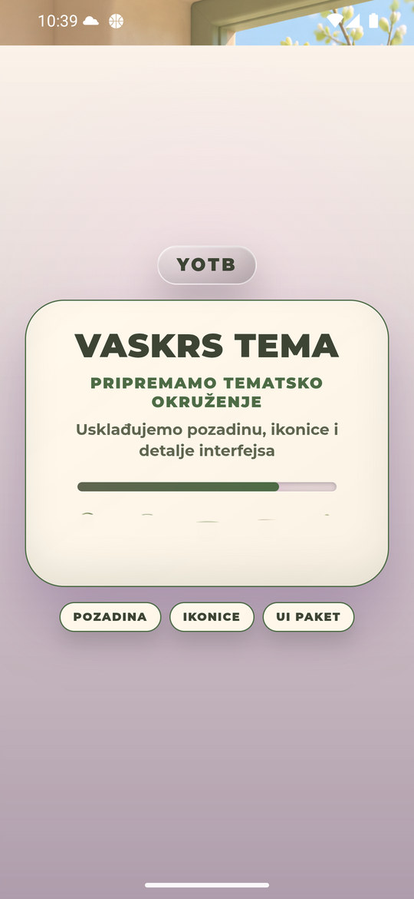
Easter: glavni meni
R10 glavne kartice koriste krem/zalfija povrsine.
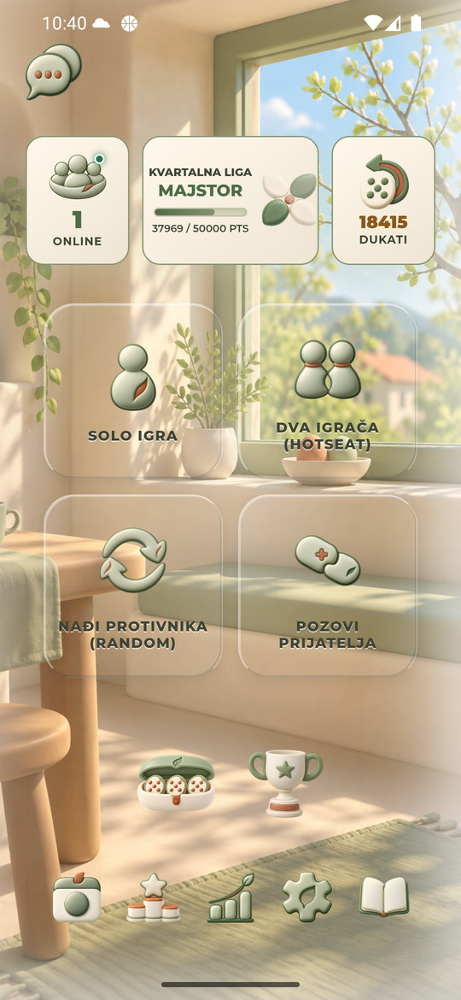
Easter: Top lista
R11: brojevi4+ sada vidljivi. Prva tri mesta ostaju medalje.
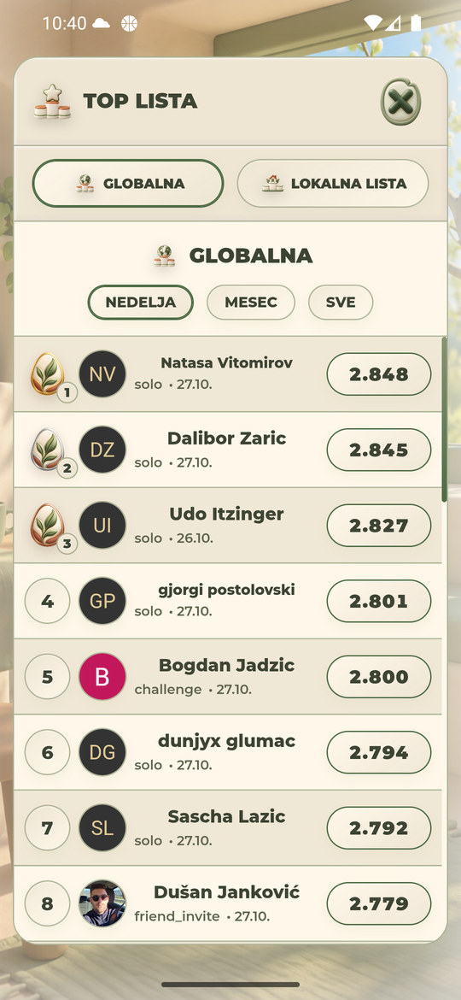
Easter: H2H
Tematsko statusno mastilo i zajednicka navigacija.
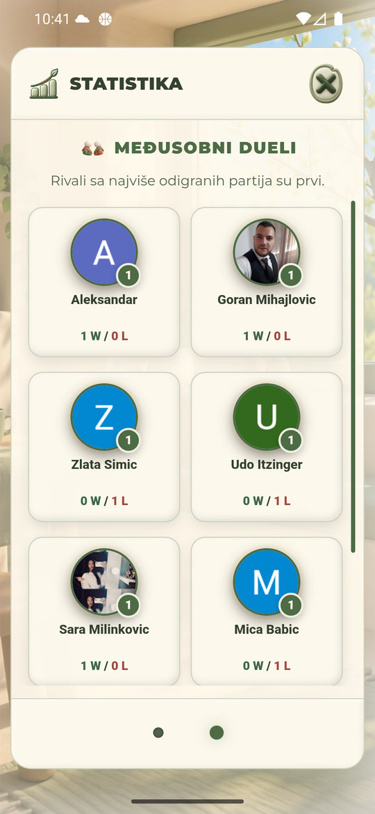
Easter: pregled statistike
Zajednicka geometrija, tematske povrsine.
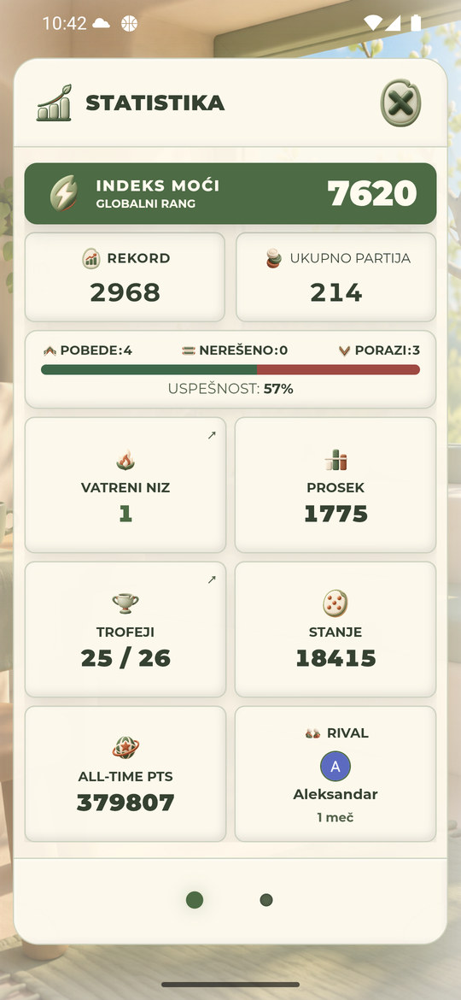
Easter: Vatreni niz
R10: redovi i skrol vise nisu lavanda.
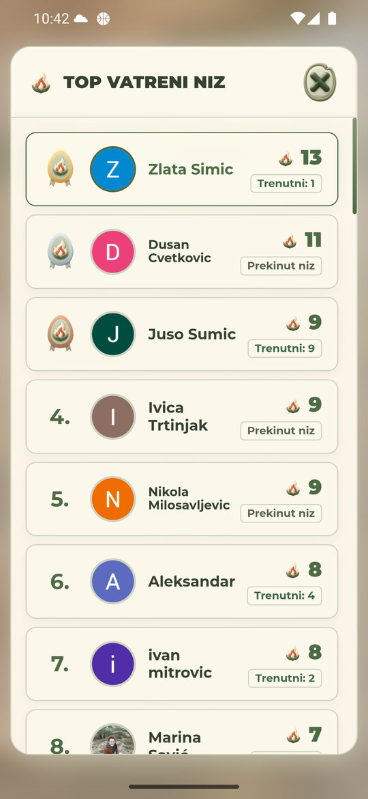
Easter: teme u Riznici
R15: aktivni tab jos ima ljubicasti akcenat.
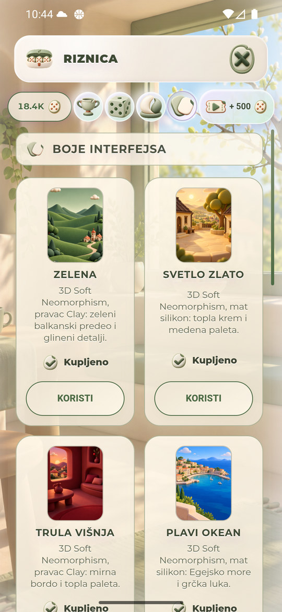
Izbor posedovanog Svetlog zlata
R14: izgled se primenjuje pre kompletnih slika. Nema kupovine.
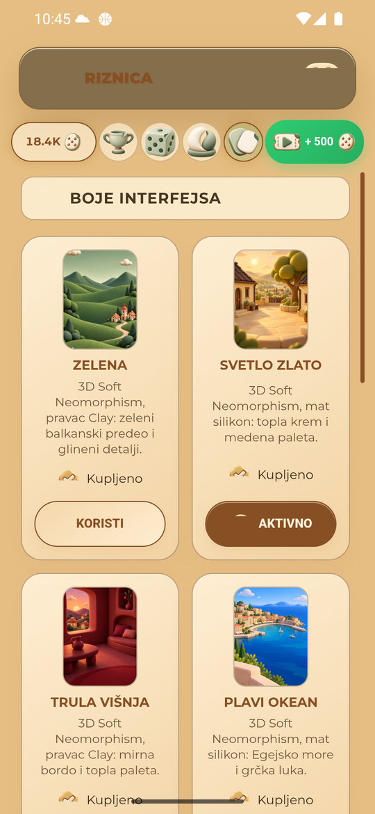
Svetlo zlato: dovrsen transfer
R14 slike stizu naknadno; R15 slabo citljiv naslov na starom tamnom zaglavlju.
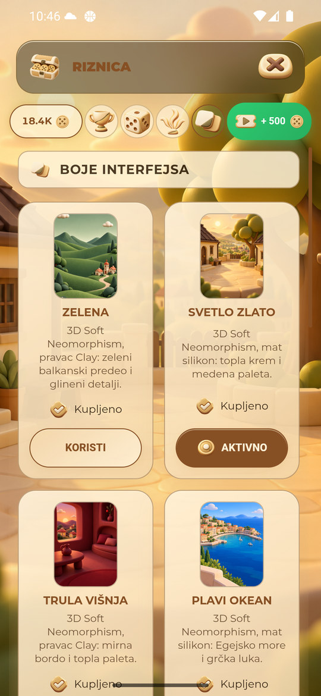
Svetlo zlato: Podesavanja posle Riznice
R13: izbor ostaje sacuvan.
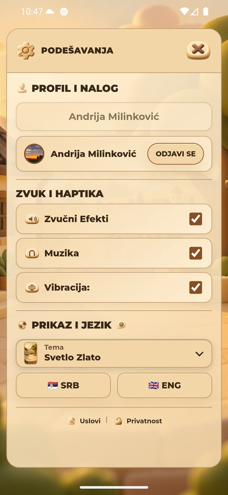
Kraj pregleda
Zelena, prijavljen nalog, originalni1440x3120 /560dpi.